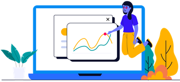

Halo, perkenalkan saya Sofyan Agus Salim seorang DevOps Engineer
Kunjungi saya di:
Profesional Geospatial Data Science dengan lebih dari 10 tahun pengalaman di GIS, berfokus pada supply chain, perubahan penggunaan lahan, dan manajemen air terpadu, didukung keahlian dalam ArcGIS, QGIS, serta pemrograman dan database, serta berpengalaman membangun sistem geospasial; saat ini sedang mengembangkan kemampuan di bidang DevOps untuk meningkatkan efisiensi dan otomasi pengembangan sistem.